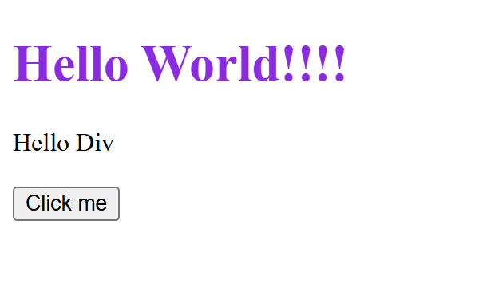
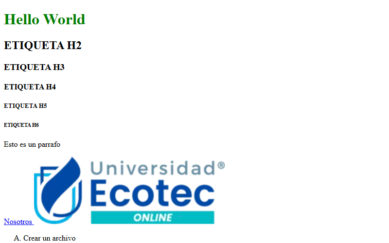
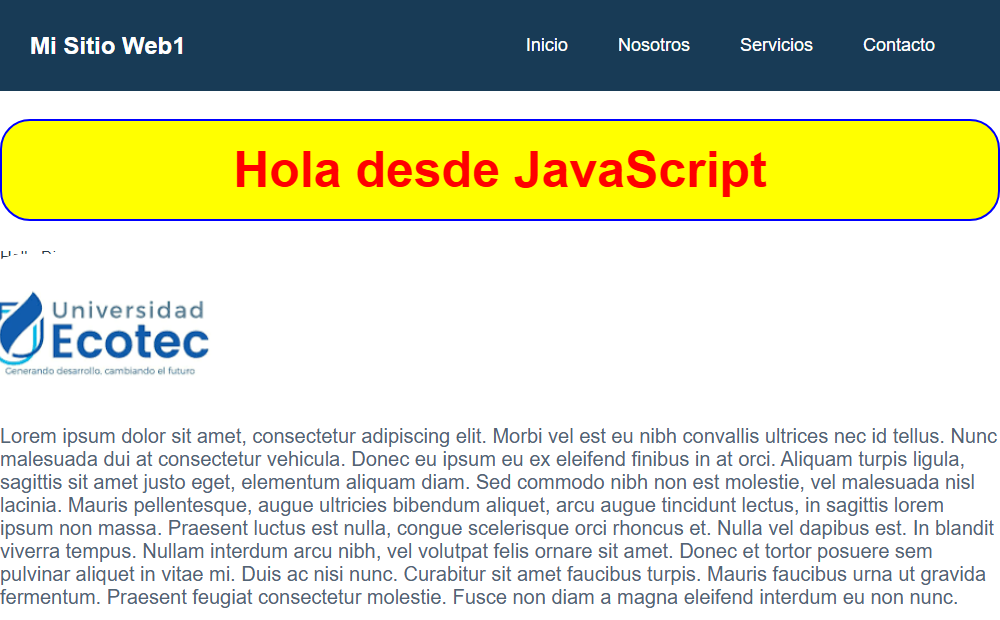

Contador de clics
Mi primera página con HTML, CSS y JavaScript. Tiene un botón que cuenta cuántas veces se hizo clic.
Ver en GitHubEstudiante de Ingeniería en Sistemas Inteligentes
Soy estudiante de Ingeniería en Sistemas Inteligentes en la Universidad ECOTEC. En este portafolio muestro lo que voy aprendiendo en la materia de Programación de Sistemas Web.
Ver mis proyectosMe llamo Angel Mauricio Guevara Chinchero y estudio Ingeniería en Sistemas Inteligentes. Me interesa la tecnología, en especial el desarrollo de páginas web y aprender cómo funcionan las aplicaciones que usamos todos los días.
En mi tiempo libre me gusta practicar programación, ver tutoriales y probar cosas nuevas en la computadora. Mi objetivo es terminar mi carrera y trabajar como desarrollador web, creando sitios útiles y fáciles de usar.

Mi primera página con HTML, CSS y JavaScript. Tiene un botón que cuenta cuántas veces se hizo clic.
Ver en GitHub
Página de práctica con títulos, listas, tablas, citas y un formulario de registro.
Ver en GitHub
Sitio con menú de navegación, tarjetas y un menú hamburguesa para celulares hecho con CSS y JavaScript.
Ver en GitHub